江南岸边 → 石桥 → 穿云 → 巨殿台面 → 主殿室内 → 屋顶 → 再次起飞。
P00—P05 累计通过；P06-01—P06-03 自动通过，P06-04 等待用户视觉与体验认可。人物、水乡和路线仍为可调整样本；Windows 性能仍待 P15。
以下为实际生产构建的 13 张 1280×720 渲染图，点击可查看原图。
Windows 临时体验包 · 累计报告 · 审核对象与指纹
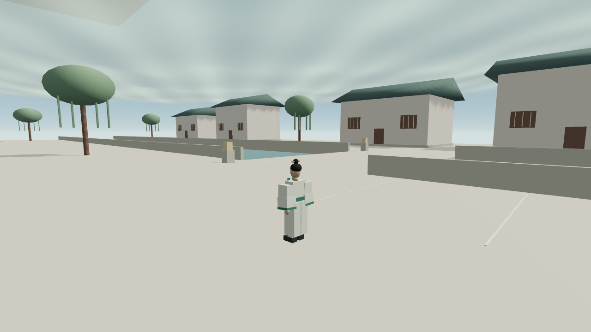
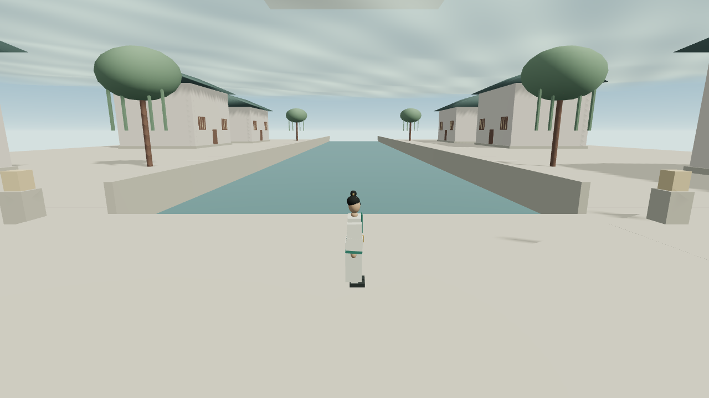
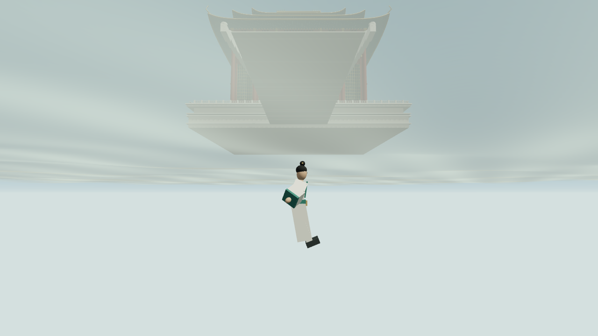
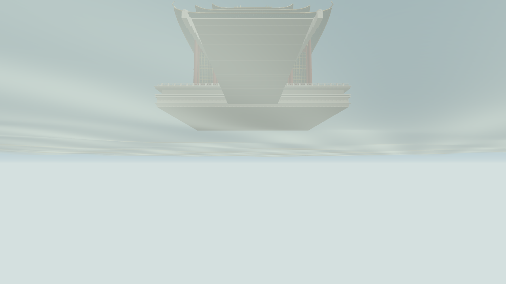
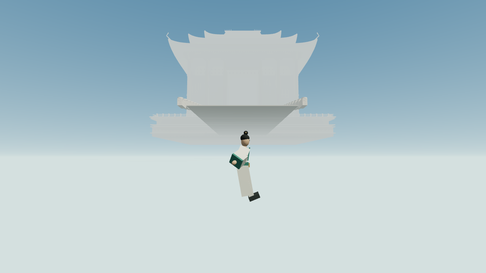
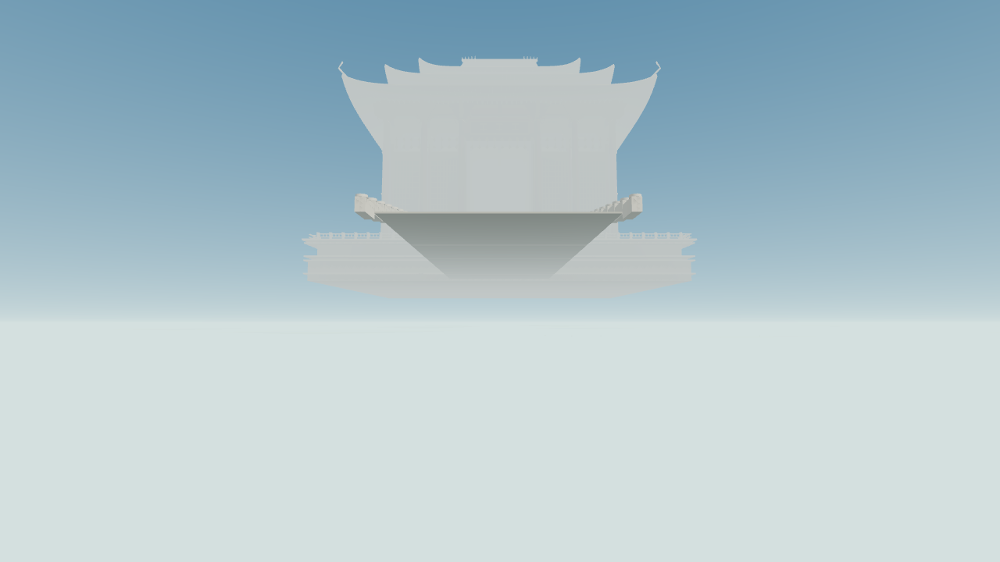
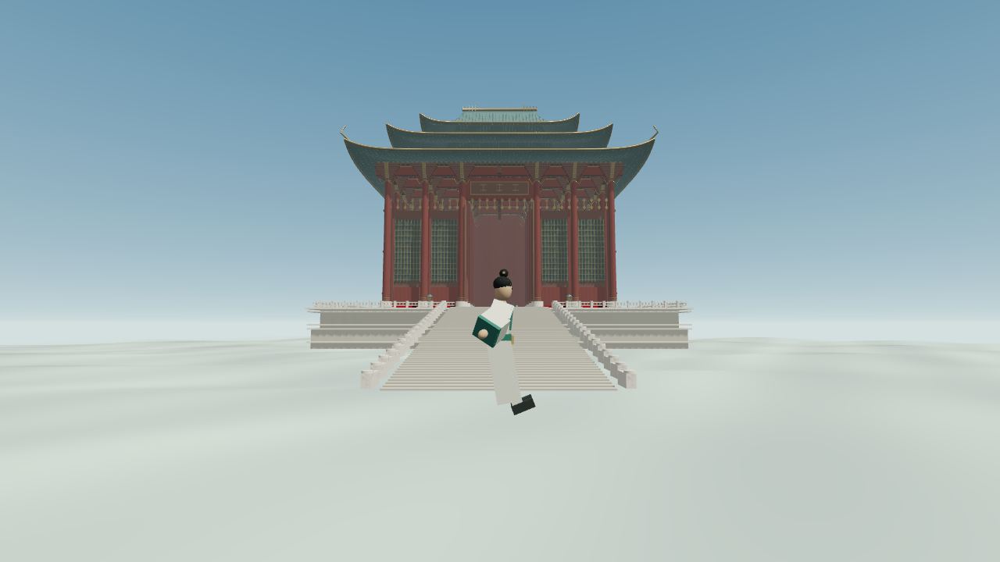
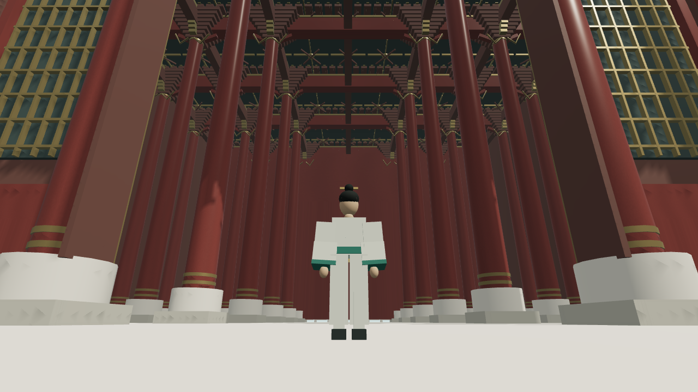
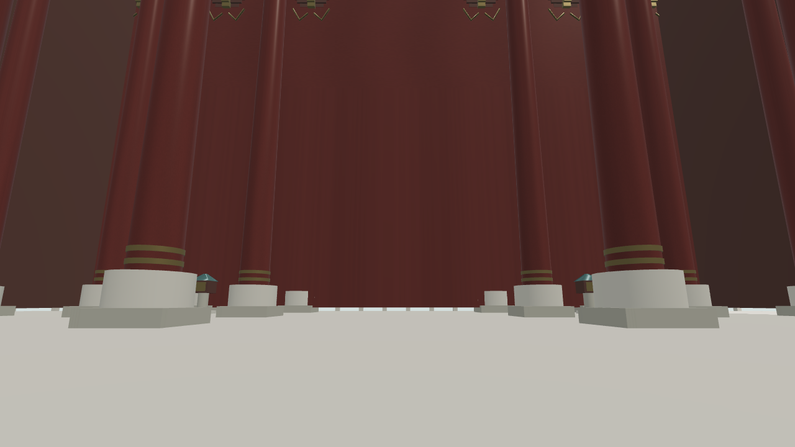
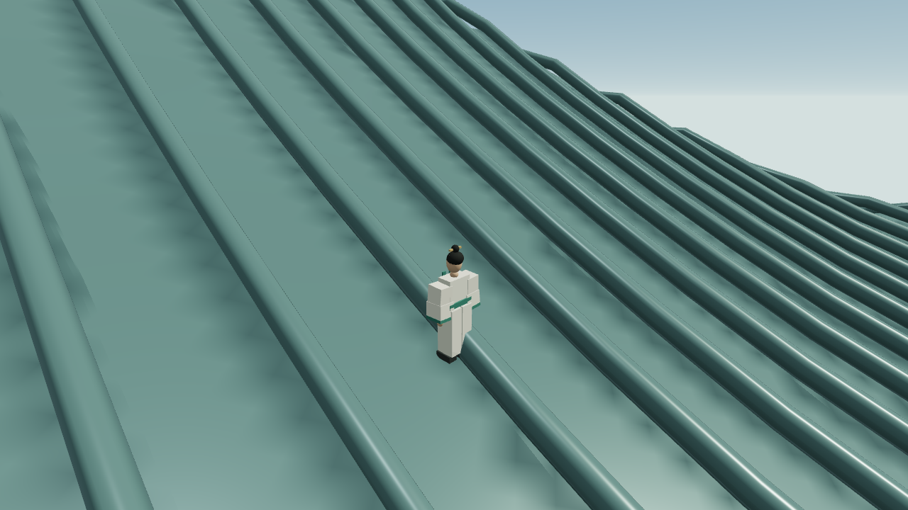
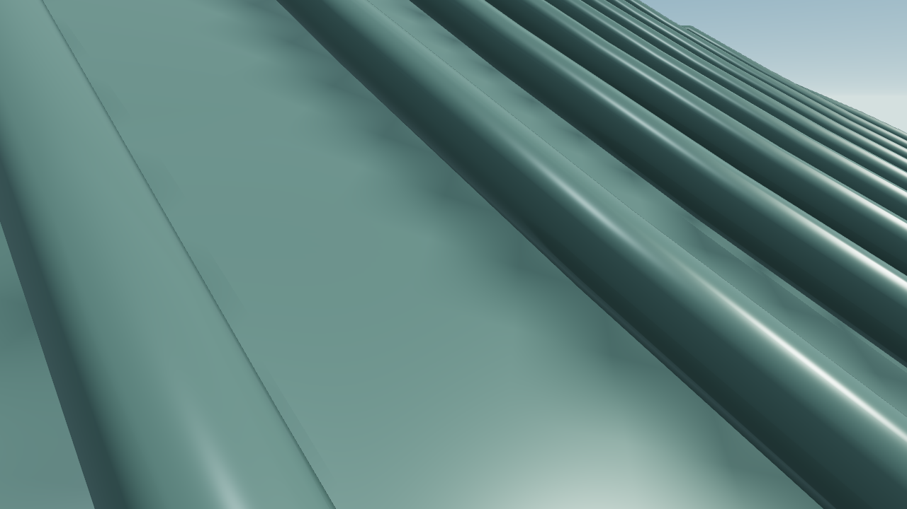
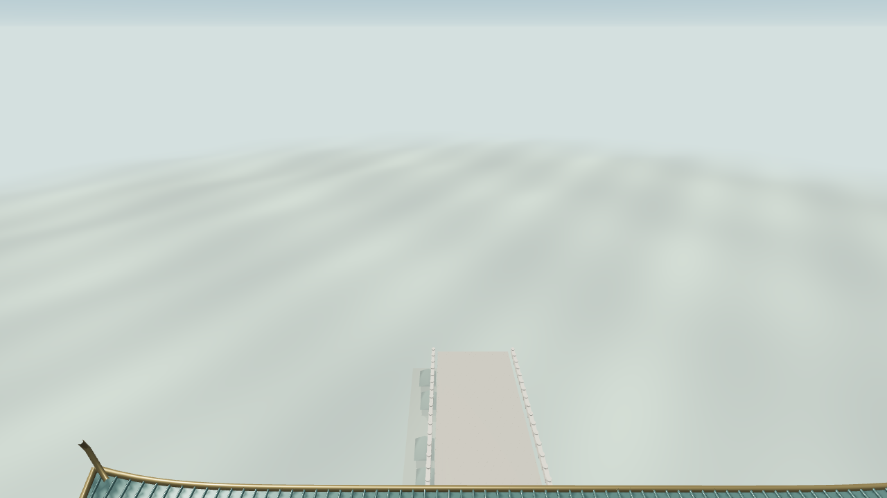